1. Introduction to the Course
This course is a practical introduction to the desktop GIS package: Quantum GIS (QGIS). It will go through the process of map production, including common GIS functionality and features, whereby you will work your way from raw spatial data to a polished, printable map at the end of the course.
QGIS is Free and Open Source Software GIS (FOSS GIS) package - where the term Free stands for Freedom, as in freedom to share and modify the software. The software is licensed under the GNU General Public Licence, meaning the source code is made available for users and developers to use, study, change, and improve. QGIS is continually growing in its capabilities, functions and plugins, due to many contributions from the QGIS community. If you are interested in knowing more about the QGIS project, please have a look at the QGIS website.
2. Introducing Quantum QIS
2.1. Installing QGIS
Back to the contents listThe latest version of Quantum GIS is available to download from the QGIS website - http://download.qgis.org . Alternatively, the course organisers may have included some of the installers and packages on the disc from this course.
On the website, there are instructions on how to install QGIS under various operating systems - Windows, MacOS X and Linux (Debian, Fedora, openSUSE, Mandriva, Ubuntu and Slackware). You can also choose from the release or the trunk version. The trunk version is actively under development, and is only available for testing purposes. For new users (and those not planning to go into the development of the software), the release edition would be the recommended choice.
2.2. QGIS Main features
Back to the contents list- Key features of QGIS
- cross platform - runs on Linux, Unix, Mac OSX, and Windows systems
- free and open source - an official project of the international organisation, Open Source Geospatial Foundation (OSGeo)
- extensible via plugins - a large variety of plugins are shared and freely available. Users can also code their own plugins to add on to the software.
- fully featured - provides a variety of tools from data capture, to analysis, to map composition
- easy to use - the GUI is designed to be user-friendly and also there are a variety of initiatives to translate the software into other languages
- great for digitising - points, lines or polygons - settings option to correct for topological errors - and capture attributes for features simultaneously while digitising
- great for mapping - create maps with labels, scale bar, north arrow, legend and pictures
- great documentation - for example, the QGIS detailed user manual updated with each release
- free community support - see the help section at the end of these notes
2.3. Introducing the interface
Back to the contents list2.3.1. GUI Overview
Back to the contents list

2.3.2. Menu bar
Back to the contents listThe Menu bar provides access to a variety of features, the most common are:
- File:
- create new projects, open or save existing projects, print maps - these functions are available on the file toolbar (see toolbars below)
- save map as an image
- project properties
- Edit:
- a list of options covered in the digitizing and advanced digitizing toolbars (see toolbars below)
- options, configure shortcuts, style manager and custom CRS
- View:
- a list of options covered in the map navigation and attributes toolbars (see below)
- select panels or toolbars to display
- tile scale slider
- live GPS tracking
- Layer:
- add / remove data layers (see manage layers toolbar below)
- control which layers appear in the overview
- hide / show all layers
- Plugins:
- fetch & manage plugins
- menus for enabled plugins
- python console
- Vector:
- vector analysis tools (provided by fTools)
- Help
Note: Depending on your operating system some options may be listed in a separate Settings menu.
2.3.3. Toolbars
Back to the contents listToolbars can be set as visible through the Menu bar, or by right clicking the tool bar area and choosing from the list. The default toolbars that display look like this:

A basic guide to the iconography used:
- a green plus
 indicates to add something
indicates to add something
- a yellow star
 indicates to create something
indicates to create something
- a red cross
 indicates to delete something
indicates to delete something
Here are some of the starting toolbars.
- File toolbar 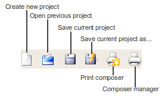
- Manage layers toolbar

- Navigation toolbar

- Attributes toolbar (section 1)
 Further on in the attributes toolbar there is also a button that enables map tips
Further on in the attributes toolbar there is also a button that enables map tips  - this may be useful to users new to the QGIS interface.
Now, you have a go...
- this may be useful to users new to the QGIS interface.
Now, you have a go...
- Add a vector layer (road_lines.shp) (If you are struggling with adding the layer, see Loading data in your project)
- Use the navigation tools to zoom and pan
- Use the identify tool (Attributes toolbar) to inspect individual roads by clicking on them
2.3.4. The Legend
Back to the contents listThe legend is also an important part of the interface, and closely connected to the map view. The legend shows all the layers that are opened. There are also a list of options available when you right click a layer - you can zoom, open the attributes table, control whether the layer is displayed in the overview map, rename the layer, allow editing (for vectors) etc. You can also switch a layer to visible or invisible, by adjusting the checkbox next to the layer's name. Double-clicking on a layer will bring up the Layer properties dialog which we will look at later in this course.
 |
Now, you have a go...
- Make sure your vector layer (road_lines.shp) is still open
- Add the raster layer ASTGTM-DEM.tif (If you are struggling with adding the layer, see Loading data in your project)
- Re-order the layers by dragging the roads layer above the DEM
- Right click the layers and see what functions are available
2.3.5. Map View
Back to the contents listThe map view contains the open data layers (that have been set to visible). Layers are 'drawn' and displayed according to the order from the legend (from the bottom up) - as you saw in the last exercise. You can change the symbology used in the map view, which we will look at in the Layer properties section. When you first open your data (unless the symbology has been specified in QGIS before), the colours used will be assigned randomly.
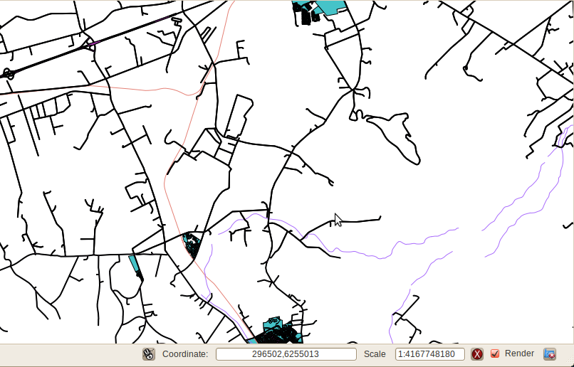
Also notice the status bar under the map view.

3. Customising your QGIS environment
3.1. QGIS Application setiings
Back to the contents listBefore we begin working with our data there are a few settings that are recommended. We will be using these settings for the exercises that follow.
- Open QGIS and go to the Options dialog found under the menu:
`Edit > Options`or`Settings > Options`depending on your operating system interface. You should get a dialog like this: 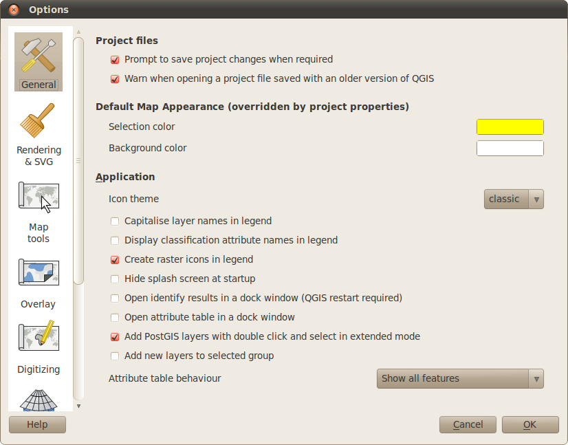  Under the Rendering and SVG tab, check:
Under the Rendering and SVG tab, check:
- Rendering behavior: Use render caching where possible to speed up redraws
- Rendering quality: Make lines appear less jagged at the expense of some drawing performance
- Compatibility: Use new generation symbology for rendering
3.2. Plugins
Back to the contents listPlugins are add-on modules (scripts written in a language called Python) created by other users in QGIS, and shared with the QGIS community. They are usually to serve a particular function e.g. such as a plugin to convert spreadsheet data to shapefiles (dxf2shp). Therefore they commonly are not included into the core QGIS application. They can however be incorporated into the core later if they are suitable (There are a few of these, such as fTools).
Plugins for QGIS give it a lot of flexibility and power. As you start working with QGIS more you will realise the importance of the plugin modules. Also if you have programming skills, you will be able to create your own plugins and contribute these to the QGIS project. For more information on this see the QGIS website
3.2.1. Managing plugins
Back to the contents list
By default some of the plugins are enabled and others disabled. You can manage the plugins (enable or disable them) through the Plugin Manager. This is found in the menu bar under `Plugins > Manage plugins...`
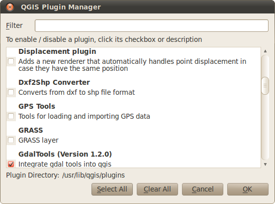
3.2.2. Fetching plugins
Back to the contents list
The Plugin manager only lists the plugins that are installed on your system. There are a whole host of plugins that can be 'fetched' from the internet. The internet is more versatile in that it provides a dynamic link where sourcecode from plugins can be updated from the developer. To get more plugins, go to the the plugin menu: `Plugins > Fetch plugins...`

This dialog may differ in content depending on what repositories you are connected to and what plugins you have installed. By default you will be connected to the QGIS contributed repository but there is a broader collection of plugins that you can use through 3rd party repositories.
Select the Repositories tab, and click Add 3rd party repositories. The warning message is letting you know that you accessing data outside of QGIS.
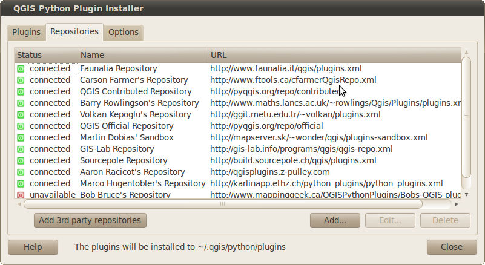
QGIS will say Fetching plugins and have a progress bar.
Note: If the update stops, there may be one or two repositories offline so you can Abort fetching (You will still have the ones that have been fetched). If you find that the same respositories are always offine, you can also disable fetching them on your side. Select the repostitory and click the Edit... button.
Now you can go back to your Plugins tab. Filter to find the desired plugin, select it and click install.
Remember: After you fetch a plugin, to use it you may first need to enable it through the Plugin manager.
3.2.3. Accessing your plugins
Back to the contents listThe plugins that are installed and active are listed under the Plugins menu bar, and are also available through icons on the toolbar. If you don't see the Plugin toolbar, you may need to set it as visible by right-clicking a blank space in the toolbar. This will bring up a contextual menu - something similar to this:

If Plugins isn't ticked, select it.
4. Loading data into your project
Follow the steps below to add data to your project. You can start off with a new project file (by selecting the new project icon  , or if you wish to continue from the exercises above - simply omit the steps you have already completed
, or if you wish to continue from the exercises above - simply omit the steps you have already completed
Now, you have a go...
- Install these plugins that you will use in later exercises:
4.1. Vector data
Back to the contents listClick the add vector icon: 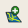
In the box that appears, click 'Browse'

Now add these shapefiles
- river_lines
- landcover_polys
- road_lines

Tip: to select more than one shapefile at a time, hold down CTRL while clicking.
Once you selected the files, click open and then open again. Your QGIS session should look something like this now:

Note: the symbol colours are randomly assigned.
4.2. Raster data
Back to the contents listThe procedure to add a raster is similar.
Click the add raster icon:

Add the ASTER DEM (ASTGTM-DEM.tif).

Initially the raster may appear grey in your view:
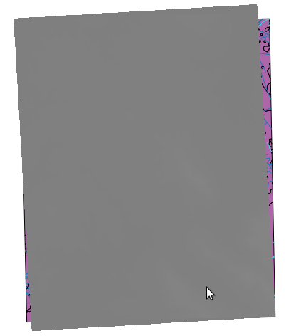
Select the layer in the legend so that it is highlighted:

Right click the layer and follow these options:
Properties -> Symbology -> Contrast Enhancement -> Stretch to MinMax -> OK

And you should see the DEM in nice grey shades now.
Add the 1:50 000 topographic map 3318DD_2000_ED5_UTM34.tif and slide it to the bottom on the layer list (legend).
4.3. Saving your project
Back to the contents listDrag and drop layers in your map so the DEM is below all others.
Once you are happy with the arrangement of layers, save your project
File -> Save Project -> File Name: MyFirstProject

5. Working with layer properties
5.1. Symbology
Back to the contents listThe symbology screen is used to set outline and fill style and colours for vector layers. For raster layers it is used to define colour shading approach (as we saw with the DEM).
- Vector symbology
 The symbology functions provide rich control over the symbolisation of vectors (points, lines and polygons). It allows you to create and customise your own styles, to increase the visual effectiveness of the map and obtain the your desired appearance. Once you create styles, you also have an option to save these for re-use.
The symbology functions provide rich control over the symbolisation of vectors (points, lines and polygons). It allows you to create and customise your own styles, to increase the visual effectiveness of the map and obtain the your desired appearance. Once you create styles, you also have an option to save these for re-use.
- Raster symbology
 Now, you have a go...
You have already used the raster symbology when editing the DEM in the section above.
Try adjusting some of the other settings:
Remember: if you can't see your DEM you may need to bring it to the top of the legend. You can move it back down at the end of these steps.
Now, you have a go...
You have already used the raster symbology when editing the DEM in the section above.
Try adjusting some of the other settings:
Remember: if you can't see your DEM you may need to bring it to the top of the legend. You can move it back down at the end of these steps.
- Invert color map
- Change color map option
Single band properties -> Color Map -> Pseudocolor OR Freak Out
If you chose the Colormap option, you will have to go the Colormap icon in the Layer Properties:Color map -> Generate new color map -> Number of entries -> Enter a number e.g. 24 -> Press Classify
For more practice:
- Open the DEM and define a custom colour map for it with 10 classes
- Also try to make the collar (black edges) disappear around the image. Hint: Use the Transparency tab in Layer Properties
5.2. Labels
Back to the contents listThe labels screen can be used to set up labelling for vector layers.
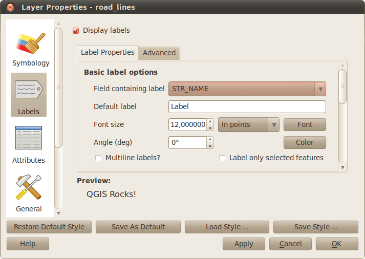
Labels can easily be added by ticking the Display labels checkbox and selecting an appropriate field name. You can also change other style parameters, a nice one to add is a buffer (scroll down in the dialog). There is a neater labelling style available, using the advanced labelling.
5.2.1. Neater labels
Back to the contents list
The advanced labelling tool can be accessed from the icon on the Attribute toolbar: 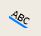
Or when you have your vector layer selected in the Contents pane, on the Menu bar select `Layer > Labelling`
Now, you have a go...
Try labelling the roads layers using the parameters below:

You should get something like this:
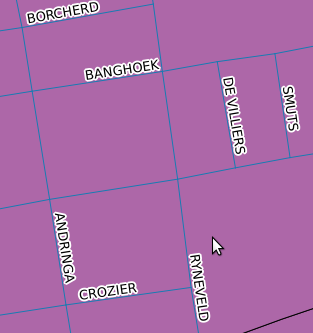
Note: If you already set the normal labelling, this needs to be switched off before adding the advanced labelling.
5.3. Attributes
Back to the contents listThe attributes panel is used to view the attributes of vector layers. For some providers, you can edit the attributes. You can also set the edit widget column value which is used when doing advanced data capture.
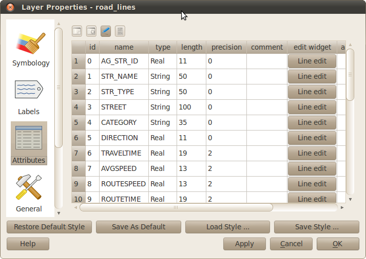
We will be looking at the attribute table in more detail later in the course.
5.4. General Properties
Back to the contents listHere you can set things like the projection parameters for the data layer, the legend display name, create spatial indexes (vector data) and subsets (vector data):
- Vector General Properties 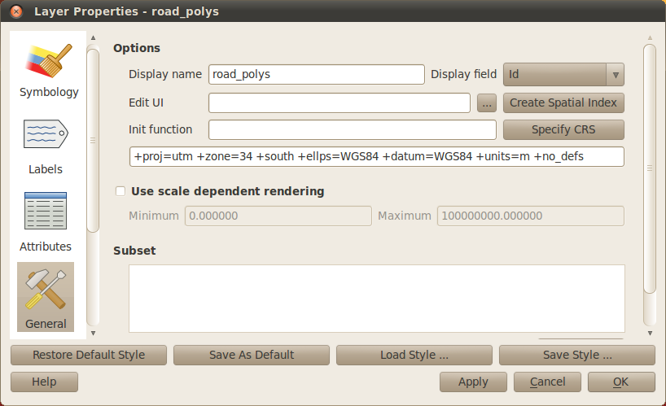
- Raster General Properties

5.5. Metadata
Back to the contents listThe metadata screen shows derived information for the layer. For vector layers you get things like feature counts and extents. For raster you see band counts and value ranges.
- Vector Metadata

- Raster Metadata

6. Visualisation examples
6.1. Combining symbology and labelling
Back to the contents listWe can combine nice symbology and advanced labelling, so get a neat display for our roads layer...
- Road symbology
For the roads layer, in symbology mode, click the Properties button:
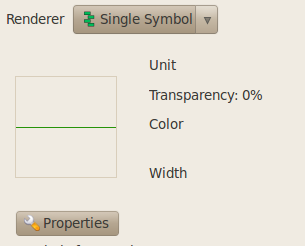
- Change the line to black, with a pen width of 3,26
- Click the
 icon to add another symbol layer
icon to add another symbol layer
- Set the second simple line to: White, pen width = 2,26
- Also if necessary, change
Join style: BevelandCap Style: Roundfor both lines
- Road labels
Change the advanced label settings to the following:
 The end result should be something like this:
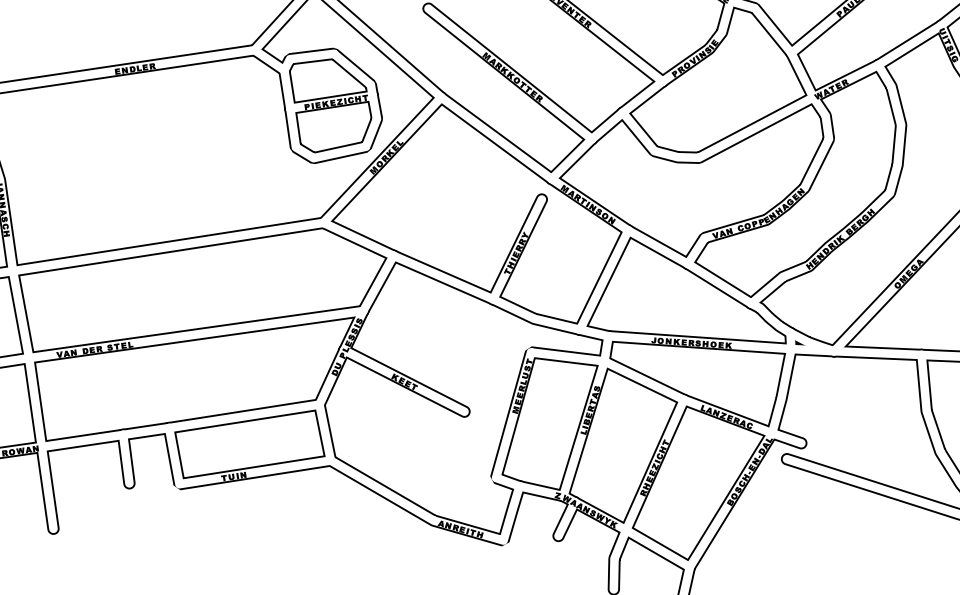
The end result should be something like this:
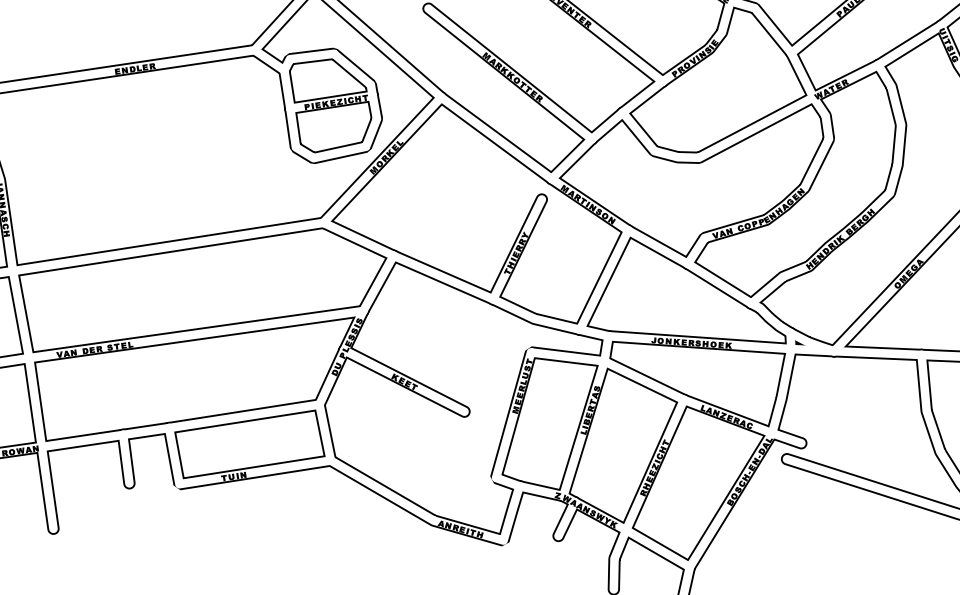
With good symbology and good labelling, you can get great results!
6.2. Visualising change with transparency
Back to the contents listTransparency can have a powerful effect, and let's you view and analyse your data in a different way. These steps will show how you can use transparency to visualise change.
- Add these aerial photographs (rasters) to your project
- 3318DD_21_2008_19_RGB_RECT_UTM34
- 3318DD_21_498_367_02_0195_PAN_RECT_UTM34
- Re-arrange the order so they follow this order:
- Rivers
- 1:50 000 topo map (2000)- 3318DD_2000_ED5_UTM34
- 2008 colour photo - 3318DD_21_2008_19_RGB_RECT_UTM34
- Old black and white photo - 3318DD_21_498_367_02_0195_PAN_RECT_UTM34
(You can remove the other layers that we are not using, or switch off their visibility)

- Zoom into Spier (by the south-west corner of the topo map)

- In the Properties of the topo map layer, change the Transparency to somewhere around 75%. 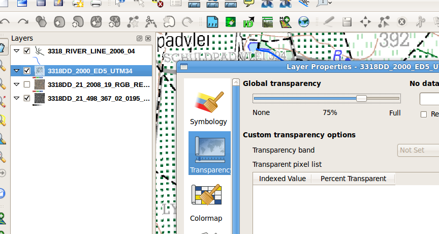
- Switch the colour photo and topo layers on and off and compare them to each other and to the black and white photo. Notice any changes?
6.3. Hillshade and DEM overlay
Back to the contents listFor this exercise we will be using the hillshade plugin to create a hillshade layer from the DEM. Then we will overlay the DEM on top of the hillshade (applying partial transparency) to create a nice effect.
- Add the DEM hillshade plugin
- Open the DEM layer, and run the hillshade plugin fuction. Call your output shade.tif
- When both the DEM and shade.tif are open, move the DEM above shade.tif
- Add pseudocolour and partial transparency to the DEM You should see the relief (from shade.tif) showing through the colours from the DEM. Your output should look something like this (this output also has the trig becons, and heights, displayed in customised symbology): 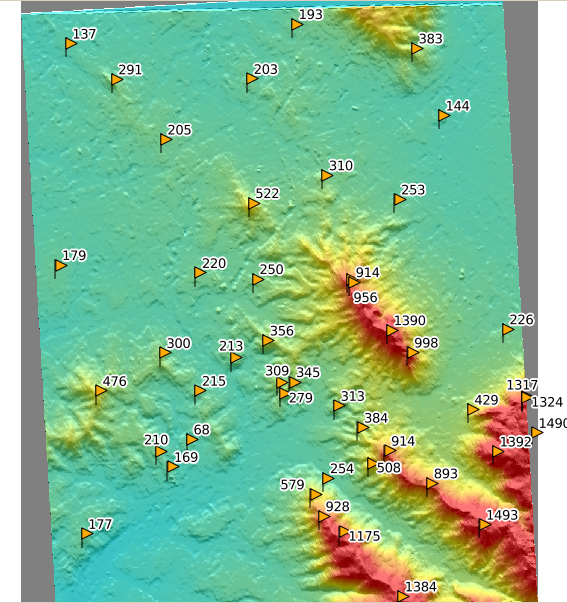
For more practice:
Open the 3318DD_21_2008_19_RGB_RECT_UTM34 image and display it over the terrain model.
7. Attribute tables
Attributes play an important role in understanding and using your vector data. So far, we have seen a number of ways that we can access the attribute information for the layer
- The identify tool
 that we used in one of the first exercises. This allowed you to click on indivual features of the active layer (e.g. roads), and the attributes for that individual feature will be displayed.
that we used in one of the first exercises. This allowed you to click on indivual features of the active layer (e.g. roads), and the attributes for that individual feature will be displayed.
- The attribute section in Layer Properties. Here we could see the list of fields for the attributes that the layer was storing. It included information about the data type of the attributes
- The attribute table. Accessed either from the toolbar 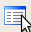 or by right clicking the layer in the legend, which will show you the full table of all the features and their attributes. We will be focusing on the attribute table this section.
But first let us look at the selection tool, as this allows us to combine the attributes of the features to the geometries in the map view (similar to the identify tool, but in a more versatile manner), and can be used together with the attribute table.
7.1. Using the selection tool and attribute selections
Back to the contents listLet's have a go...
- Open the landcover polygon layer, make sure it is on top, and the active layer (selected)
- Use the selection tool
 , and click on some of the features in the map view. You should see these highlighted yellow.
, and click on some of the features in the map view. You should see these highlighted yellow.
- You can select one by clicking, or select many by either dragging a box (selecting by geographical area) or by holding the CTRL button and selecting individual features
-
- Open the attribute table for the layer. Notice how when you select features in the map view, they are also selected in the attributes table.
- You can use the icon
 on the attribute table, to move the currently selected to the top of the table so that you can evaluate them. Or you could enable
on the attribute table, to move the currently selected to the top of the table so that you can evaluate them. Or you could enable Show selected records onlyThe features dynamically linked through the attribute table and map view. You can also select features from the attribute table (click on the record/row number on the left of the table. To select more than one feature hold down CTRL or drag the mouse)
7.2. Editing attributes and using table calculations
Back to the contents listFor the Landcover polys we can see that there is an Area attribute, but many of the amounts are 0 or in scientific notation that is difficult to interpret. Let's try to recalculate the area as a new separate column.
Let's have a go...
- Before making any changes to your attributes you need to enable editing. You can click the pencil icon 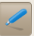 on the digitising toolbar, the same icon is availble on the attribute table. You could also right click your layer and
Toggle editing. You will know when your layer is in editing mode when:- there is a little pencil drawing icon on your contents pane next to the layer name:

- the rest of the icons on the digitising toolbar are no longer greyed out
- you will see red croses in the mapview that indicate vertices of other shapes (lines or polygons) in that shapefile.
- there is a little pencil drawing icon on your contents pane next to the layer name:
- Next you will select the field calculator from the attribute table. Click the calculator icon on the Attribute table dialog (the last icon in the icon list):


- We will create a New field. Deselect Update existing field if this is ticked (we would tick this option if we wanted to edit an existing field). For New field, input the following
Output field name: Area2 Output field type: Decimal number (real) Output field width: 10 Output field precision: 2
- In the Operators section click the
areabutton. This will add$areainto your field calulator expression box. Then click OK. Now you will see that there is a new column, called Area2 with the newly calculated values. Question: What units are the new area measurements in? Can we do this and what will it require? You can test one of the area values. Select a record (feature) from the attribute table and zoom to the selected feature in the map view. Use the Measure Area tool in the Attributes toolbar, to measure the area (digitise over the area by left clicking, and right click to complete). Compare this number with what is listed on your new area value in the attribute table.
in the Attributes toolbar, to measure the area (digitise over the area by left clicking, and right click to complete). Compare this number with what is listed on your new area value in the attribute table.
- To save your edits, remember to disable editing mode and say yes to saving the edits.
7.3. Searching the attribute table
Back to the contents listIf we were looking for all features with a specific attribute, say for example waterbodies, there are a few ways to go about this
Let's have a go...
- As with most database application, the attribute allows you to sort the fields.
- Click the column name DESCRIPTIO to sort by the attribute, then scroll down to where the waterbodies start 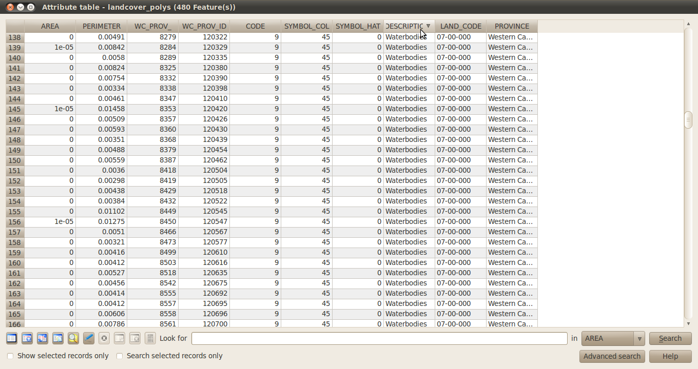
- Now, you would have to drag and scroll down to select all the features (rows) that are water bodies
- You will see them appear in the map view (these are dams in the area. You can review this by overlaying your topo map and changing the transparency level)
- Another way would be to use the Look for ... field (Note: this is case sensitive). Type in
Waterbodiesand select theDESCRIPTIOfield -> Search- This will automatically select all the features that are waterbodies
All waterbodies selected:

- This will automatically select all the features that are waterbodies
All waterbodies selected:
- There is also an option to used the advanced search.
You may want to find places that are barren rock. Using the advanced search:
Advanced search button -> click DESCRIPTIO in field list -> click sample Double click DESCRIPTIO in field list -> click equals (=) button -> Double click 'Barren Rock' in values list Press OK
One feature has been selected. We can see this in the attribute table using the steps from the previous example, but where is it in the map view? To zoom to the selected features use the 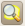 icon on the attribute table.
8. Spatial bookmarks
Spatial bookmarks allow you to 'bookmark' (store) the geospatial location. There are tools for this on the Attribute toolbar: 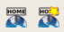. Say for example you would like to keep the location of where the barren rock is (without repeating the search, or saving the feature as a separate layer). You can create a bookmark for this area (the current view extent of your map view):

Then by clicking show bookmarks, you will have a list of all previous bookmarks that you can zoom to and re-visit.
9. Georeferencer
If your raster imagery is not georeferenced, it will not be easy to overlay your data. You can georeference data in QGIS using the Georeferencer plugin.
Let's have a go...
9.1. Setting up
Back to the contents list- Load the plugin
Georeferencer GDALusing the QGIS Plugin manager (under Plugins on the Menu bar) 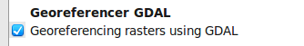 The geoferencer will now be available on the Menu bar (under Plugins) and on the toolbar: 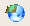 (provided the plugin toolbar is set to display) - In Project properties uncheck
Enable on the fly CRS transformation - To georeference we will need a reference layer. In this example we will use the roads layer. Load the layer road_lines if it is not open, and switch off the visibilty of the other layers if they will interfer.
- For this example it will help to have the street name labels on and all you can use the search tools in the attribute table to find the relevant street names. Use your knowledge from the previous sections to add the labels and access the attributes (street names)
9.2. Using the Georeferencer tool
Back to the contents list- Start the georeferencer tool

- Load the raster: roads.png (this has no projection data and is a raw data image)
- Digitise in 6 GCPs (refer to the image below as a reference) - see guideline steps below the image
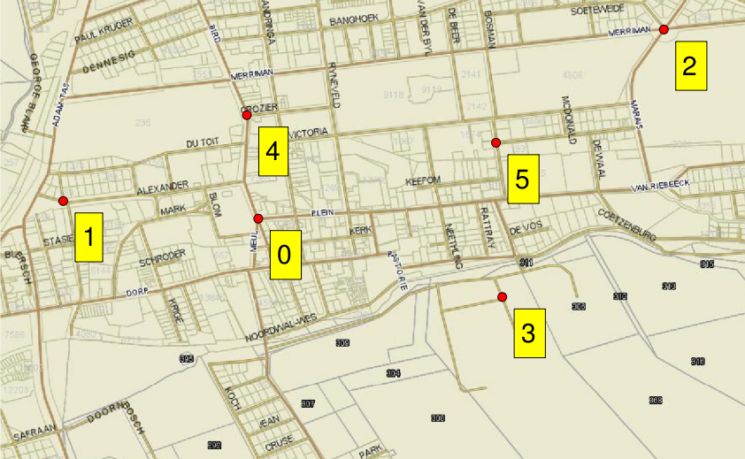
- To digitise, the Add point button 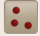 on the Georeferencer toolbar must be enabled
- Under Georeferencer menu bar:
Settings -> Configure Properties -> check "show IDs"
 |
Begin by digitising in the Georeferencer window. Click From map canvas, and then digitise the corrosponding point from your QGIS main map view |
- Change the following in the Transformation settings
- polynominal 1
- nearest neighbour
- LZW
- set output raster
- SRS: EPSG:32734
- check
Load in QGIS when done
- And then run the process (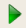 on the toolbar) Congratulations you have georeferenced an image in QGIS! You can save your GCP points in the Georeferencer and load them if you need them again. Evaluate your georeferenced image in QGIS.
10. Editing
Using our georeferenced image, we can digitise vector layers and create new information. Let's create a new layer for the land parcels (the numbered areas at the south end of the the georeferenced roads image)
10.1. Create a new vector layer
Back to the contents list- Create a new polygon layer
 called
called parcels - Add an attribute for the land parcel number (integer/ whole number)

10.2. Digitising settings
Back to the contents list- In Project Properities (General tab) you should enable the topological editing 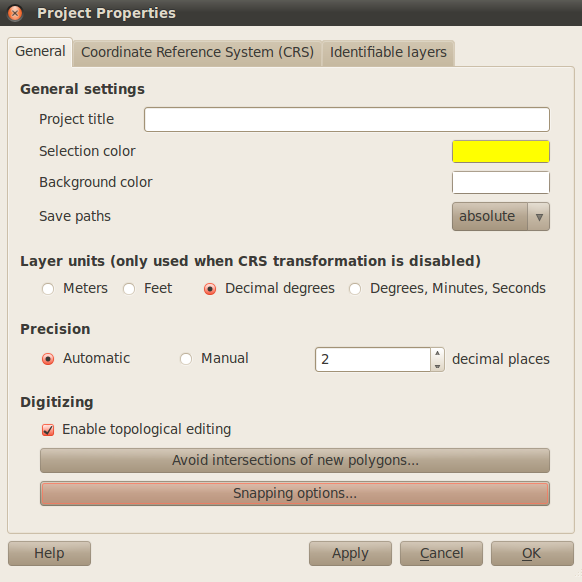
- Select
Avoid intersection of new polygons...for the layer - For Snapping options, enable for the layer and set a tolerance of 10
10.3. Digitising tools
Back to the contents list- Now you can start digitising
- To enable editing, click the button on the digitising toolbar
- To digitise in a new feature use
 .
.
- Right click to finish the feature, hold down the middle mouse button and drag to pan while digitising
- Capture the attribute data (parcel_number) as you digitising, or if you wish to turn this function off you can Options menu (under Edit in the menu bar) -> Digitizing
- You can move a vertex afterwards using
 .
.
- Save your features as you digitise
A similar approach can be applied to other instances if you wanted to edit vector data that has already been captured.
For more practice:
- Create a polygon layer with attributes:
- name
- type
- value and call it property.
- Set up snapping options in QGIS options.
Set Project properties to enable
- topological editing
- Avoid polygon Intersections
- Snapping between layers
- Create some new features and experiment with the digitising tools
Experimenting with more functionality with attributes:
- Create a new line layer with fields:
- id
- name
- type
- date_checked
- image
- Use the Layer properties attributes to add the following widgets:
- Create a CSV file containing values and keys and use it to select types
- Set names to use layer unique values
- Set the date_checked field to use a date widget - Set the image field to use a file picker
- Create some new features in your layer
11. Analysis
One of the strengths of GIS is the ability to do spatial analysis. In this section we will walk you through some simple examples of spatial analysis in QGIS.
11.1. Vector analysis
Back to the contents listSay for example you were doing a study and had to identify all roads within 200m of the rivers as they may be prone to flood risk, or have environmental implications for the rivers. The best way to look at the area that is a certain distance from the rivers is to create a buffer around the rivers. Once we have identifed the features, we can store them as a separate shapefile.
Let's have a go...
For this part you will need these layers open:
- rivers.shp
- roads.shp
11.1.1. Buffer
Back to the contents list- Make sure that the rivers layer is open.
- On the menu, select
Vector -> Vector processing -> Buffer - Use the settings as indicated below, and specify your output file. 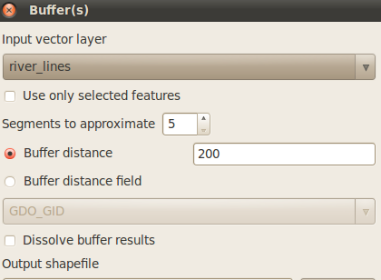
Note: Check your projections. The Project Properities should be in UTM 34S before running your buffer. If necessary you can re-project the rivers layer on-the-fly (enable in Project properties). See the settings in image below:
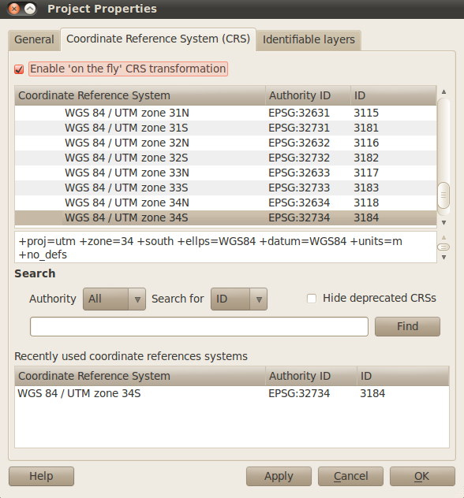
11.1.2. Select subset of feaures by spatial selection
Back to the contents list- There are at least two ways to do a select by location:
- Option 1: is available in fTools, under the main menu bar
Vector > Research Tools > Select by location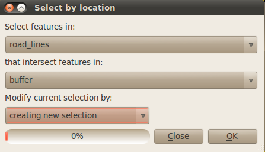 - Option 2: Use the plugin
Spatial Query Plugin(with the Toplogical operation setting as intersect). This option may be recommended for bigger datasets.
- Option 1: is available in fTools, under the main menu bar
- Once you selected your road features, you can export them as a separate shapefile. Right click the layer on the Contents pane and choose
Save selection as...
11.1.3. Clip
Back to the contents listYou may have noticed that the spatial select includes parts of the features that extend over the buffer area. One way to get rid of these 'dangling' pieces would be to do a clip.
- Select your roads layer
- On the main menu select
Vector > Geoprocessing tools > Clip - Use the settings as follows and specify your output file 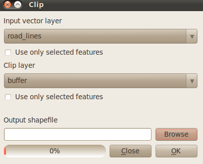
- You output should look something like this when you load it:

11.2. Raster processing
Back to the contents listQGIS is also capable of raster processing. We will have a quick look at some of the common raster functions such as clipping and reprojecting. Clipping rasters is often necessary as raster files can be quite large, so clipping allows us to extract the data that is useful to us. Reprojection (or warping) is necessary as you will get data from different sources and these will need to be in the same projection to be seen together (this applies to rasters, for vectors there is reprojection on-the-fly capabilities which allows automatic live reprojection)
11.2.1. Setting up
Back to the contents list
To access the raster tools we need to enable the GdalTools plugin. Go to Plugins > Manage plugins... and tick the following
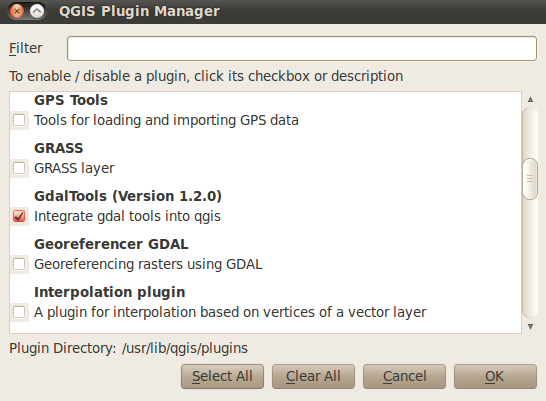
This will add an extra menu item Raster to your main menu!
Note: Another extremely useful raster plugin (that handles a lot of raster analysis) is the GRASS plugin.
11.2.2. Raster clip
Back to the contents list- Open your DEM
- Zoom into the spatial bookmark
Barren rockwe created earlier. Say for example we wanted to visualise more of the topology (height) of this area. At the moment there is not much contrast in the grayscale symbology. We could change this in the symbology settings or we could create a new raster just for this extent. We going to follow the second approach for now. - Zoom to the rough extents you want your new raster clip
- Select on the menu
Raster > Clipper - Specify your output file in the dialog. Then click and drag a box in the Map view. This will automatically add the extents to the dialog 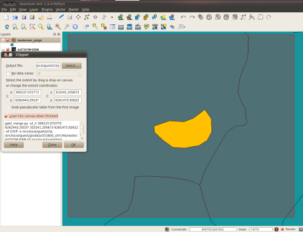
- Press OK, it will run. You can examine your output.
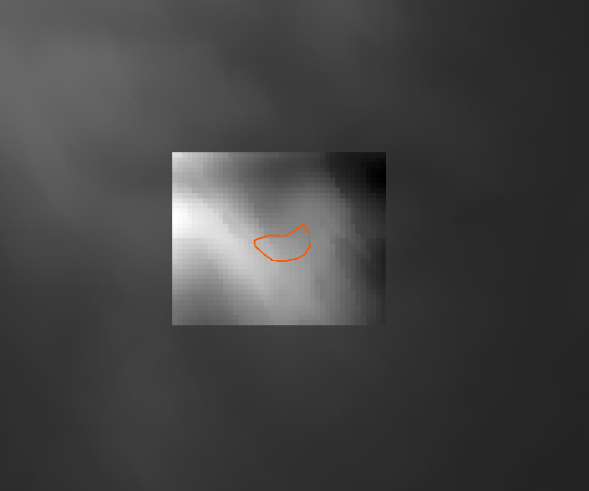
===Raster warp===
GDAL warp allows for coordinate transformation (reprojection). It even allows batching.
Let's have a go...
+ Open your DEM
+ Run
Raster > Warpto convert it from UTM34S to LatLong co-ordinates. Remember to specify the input SRS. + How would you check the output?
12. Map composition
One of the most useful ways of displaying the output GIS data is in a map. QGIS provides a good interface for creating your own custom maps.
Let's have a go...
- Getting your data ready
- Open the following layers and symbolise appropriately
- Census 2001 (use categorised symbology for a chosen attribute)
- Roads
- Rivers
- Zoom to the rough area that you want your map to contain
- Check that your project has a projected CRS e.g. UTM 34S. Enable on the fly projection if necessary.
- Open the following layers and symbolise appropriately
- Create a new map compostion by clicking the
 button on the toolbar.
button on the toolbar.
- In the General options for the map compostion (side bar) specify - A4 Landscape
- Add a map by clicking
 , then click and drag a box on the page.
, then click and drag a box on the page.
- click in map and select
ItemTab - Select
Gridand tickShow Grid - define a X and Y grid interval of 100000m (adjust to your extent)
- Select
Draw Annotation - Select the annotation position
Outside Frame- annotation direction:Boundary Directionand Coordinate precision: 0 -
- click in map and select
 Adding a legend
Adding a legend
- Click in Legend and select
ItemTab - Change the Legend Title to
Census 2001 - Open the tab
Legend Items`and move Swellendam at the top - Open the tab
Item optionsand remove the box (uncheck show frame)
- Click in Legend and select
 Adding a scalebar
Adding a scalebar
- Resize the scale bar height to 2mm
- Open the tab
General optionsand remove the box
- 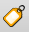Adding a text box for a heading
- Add some text for the heading
- Open the tab
General optionsand remove the box
- Add a north arrow using 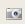 (click and drag a box), and scroll to find a north arrow image. Enable
Sync to map - Experiment and add anything else such as arrows, shapes, tables for attributes etc
13. Conclusion
13.1. Overall exercise
Back to the contents listNow let's put everything together!
Let's have a go...
- Start a new project
- Set the CRS to UTM 34 S
- Add in the roads and rivers layers
- Define styles for each layer:
- classify roads by type and use a variation of an overlay style for each class
- create an offset shadow behind your rivers
- save the style definitions so that they can be reused later
- Add the roads in again, and create a query / subset definition so that it only shows streets and minor roads.
- Set the first road layer to only be visible between 100000 and 100000000
- Set the second road layer to be only visible between 0 and 100000
- Configure labels for the roads layer that is shown at a large scale
- Create a new line layer with attributes:
- name (text)
- type (number)
- Use the attribute properties to create a value map for each field
- Configure snapping so that the line layer is snapped to roads and rivers
- Capture 5 new features.
- Create a buffer around each line feature of 500m
- Select all roads that intersect the buffer
- Create a map composition showing the roads that intersect your buffers and add traditional map elements - scale bar, north arrow, etc.
13.2. More about plugins
Back to the contents listHere is a quick list of useful plugins that you can play around with:
- Value tool (Dynamically displays the values for all the raster layers, as you move your mouse cursor)
- Table manager (allows you to create,delete and edit column names)
- DEM hillshade (creates a hillshade of your DEM)
- PostGIS manager (if you using PostGIS databases)
- Spatial query
- 1 band
- GRASS
If you would like to know more about contributing plugins, or plugins that are available, you can look at the PyQgis website
13.2.1. Extra exercise on plugins
Back to the contents listThis challenge is to use the GRASS plugin (and hillshade plugin). See if you can complete these steps:
- GRASS plugin- Create a new map set
- Import your dem into GRASS
- Create a hillshade model using the Hillshade plugin
- Add the shade to QGIS
- Create a 3d flythrough view in GRASS
13.3. Where can I go for help?
Back to the contents listThe open source community provides help and support for QGIS in a number of different ways:
- Mailing lists:
- For QGIS users: http://lists.osgeo.org/mailman/listinfo/qgis-user
- For QGIS developers:http://lists.osgeo.org/mailman/listinfo/qgis-developer
- For contribution to QGIS help and support: http://lists.osgeo.org/mailman/listinfo/qgis-community-team
- For a full list, please see the QGIS User Manual, Help and Support section
- IRC channel: Using IRC, you can join the #qgis channel at irc.freenode.net. Logs of the discussions that occur here are also kept at http://logs.qgis.org
- Bug tracker: https://trac.osgeo.org/qgis/ This is the system used for logging bugs, submitting patches for bugs an requesting enhancements.
- QGIS Official Blog: http://blog.qgis.org This weblog is created by QGIS users and developers. You may also sign up and contribute
- Official Wiki: http://www.qgis.org/wiki Information on development plans for the software, release plans and links to download sites can be found here
13.4. Where to next?
Back to the contents listThis is just the beginning of a much broader world... some examples of more steps to follow:
- Learn more about webmapping using open source software. QGIS can be used to create webmaps!
- Participating in crowd sourcing for projects such as OpenStreetMap by contributing data